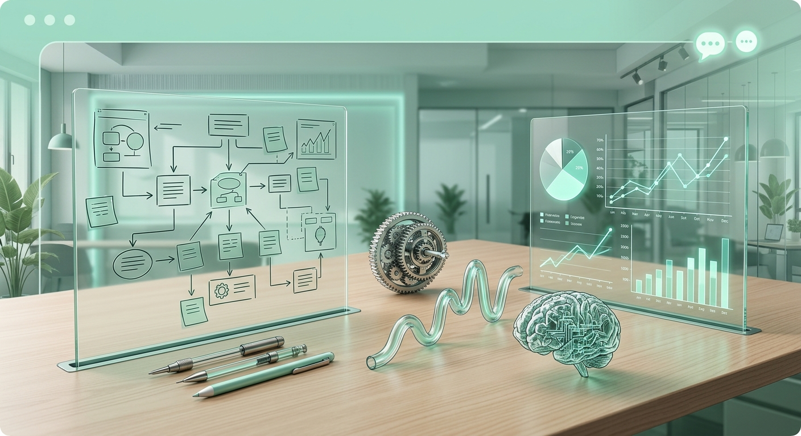

Cada letra é uma frente real da operação. Juntas, formam o ritmo que transforma intenção em resultado.
Cadência e disciplina para manter a operação em movimento. Sem batida instalada, o time trabalha no improviso.
Processos e método para fazer acontecer. Toda atividade rastreada: contato, reunião, proposta e fechamento.
Análise transformada em informação para decisões mais rápidas. O negócio lido automaticamente.
BEXIN instala método, ferramenta e inteligência para você liderar a operação comercial com dado real, toda semana, sem depender de planilha ou achismo.
Não chegamos com metodologia genérica de consultoria. Chegamos com cicatriz de campo, carreira executiva em Indústria e Varejo, e um método testado em centenas de operações reais — do chão de vendas à diretoria.
A BEXIN existe porque vimos, durante anos, o mesmo problema se repetir: equipe esforçada, gestão perdida, resultado que não fecha. E aprendemos exatamente como resolver isso.
Clique no que mais dói. É difícil admitir. E é exatamente por isso que você está aqui.
Você toma decisão no escuro. Dado espalhado, planilha que ninguém atualiza, sem visibilidade real do que está acontecendo agora.
A equipe trabalha, a reunião acontece, mas nada muda. Sem cadência instalada, o resultado vira roleta — depende de quem apareceu animado na segunda.
O gestor apaga incêndio. Não lidera. Gerencia pelo barulho e só descobre o problema quando a meta já escorregou.
Cada vendedor trabalha do seu jeito. Sem método, sem follow-up rastreável. A meta vira esperança, não plano.
Quando a meta não fecha, já é tarde demais para agir. A BEXIN chega antes.
Cada contato, reunião, proposta e fechamento registrado e visível. O gestor lê tudo em uma tela, toda semana.
Alertas automáticos que leem o comportamento real do funil e indicam prioridades sem depender de análise manual.
Gestores treinados para conduzir rituais semanais e liderar a equipe com dado. Não com achismo.
Ferramenta, inteligência e método entregues juntos. Não em módulos separados que ninguém conecta.
Tudo que acontece na operação comercial visível em uma tela, automatizado, sem planilha paralela.
1 / 7 · Funil Comercial
Alertas gerados automaticamente a partir do comportamento real do seu funil.

Ferramenta sem método é carro sem motorista. A BEXIN instala batida comercial e treina gestores para conduzir rituais com a equipe.
Como preparar a equipe antes de qualquer sistema.
O que conduzir toda semana e analisar todo mês.
KPIs reais como base da decisão, não opinião.
Como transformar cada alerta em ação de time.
Como manter ritmo e motivação semana após semana.
Cada vendedor responsável pela própria carteira.
30 minutos para entender onde a operação trava e o que falta para mudar.
PULSO configurado com dados reais. Gestores treinados para conduzir rituais.
Cadência instalada. Equipe com ritmo. Estratégia virando execução toda semana.
Selecione o que você quer implantar e solicite uma proposta. Sem preço na tela, sem compromisso.
Configuração completa do PULSO com dados reais da sua operação. 7 frentes ativas, dashboards prontos, equipe treinada para usar.
Rituais semanais instalados, gestores capacitados para liderar com dado, cadência comercial funcionando do zero.
A entrega integral da BEXIN. Ferramenta, inteligência e método juntos. Operação comercial funcionando com batida, execução e dado.
Preencha abaixo e entraremos em contato em até 24h.
Selecione uma opção ao lado.
Sem spam. Sem compromisso. Só uma conversa honesta.
Agende um diagnóstico gratuito de 30 minutos e descubra o que falta para sua equipe realizar de verdade.
Agendar diagnóstico gratuitoNão necessariamente. O PULSO foi desenhado para funcionar com os dados que sua operação já gera, sem forçar migração de sistema.
Não. A visão do vendedor mostra só a própria carteira em formato simples. O objetivo é reduzir fricção, não criar mais uma tela para preencher.
A implantação inclui o processo inicial de instalação de cadência. O acompanhamento contínuo é combinado conforme a maturidade da operação.
BEXIN vem de Batida, Execução e Inteligência. Não é nome aleatório. É o método que a consultoria entrega: ritmo para avançar, execução para realizar e inteligência para decidir.